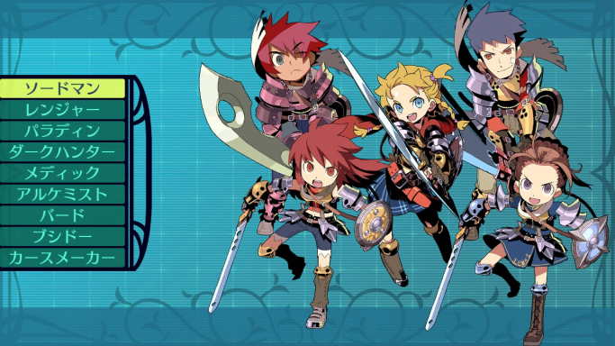
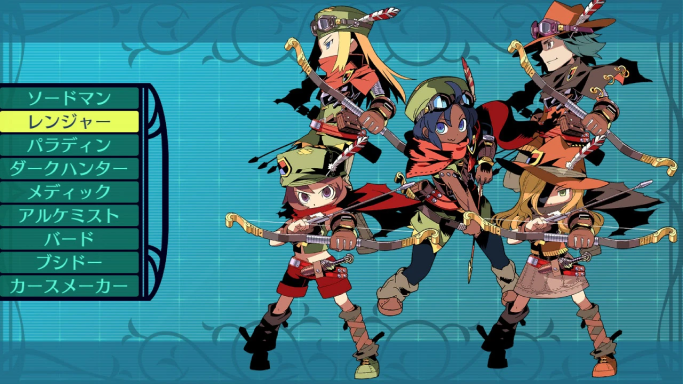
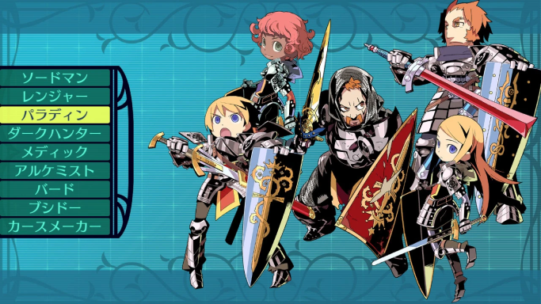
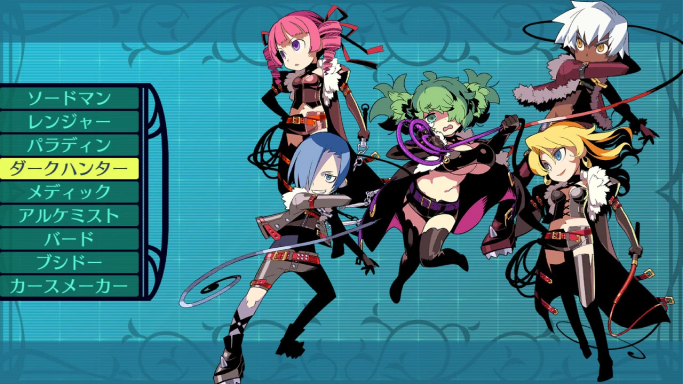
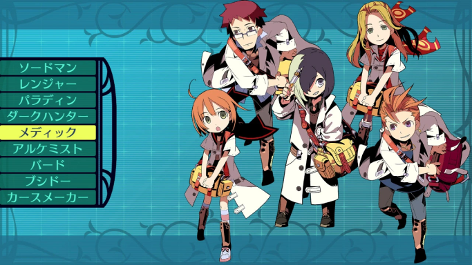
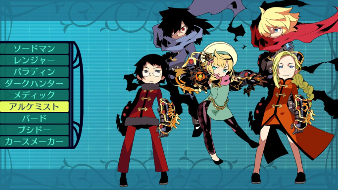
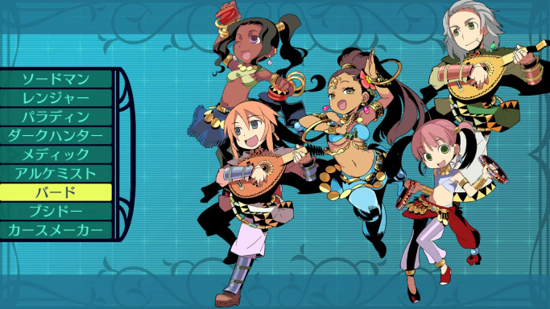
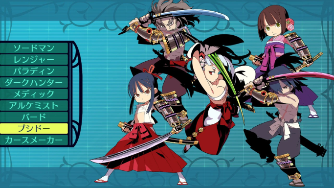
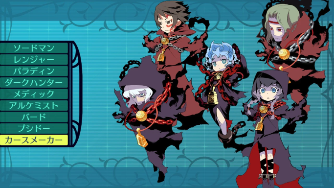

職業紹介
ソードマン

前列で戦うバランス型
剣や斧を用いて戦う近接戦闘の達人。
豊富に使える武器防具で常にバランスよく戦闘を行うことができる。
レンジャー

前後列で戦うスピード型
樹海で生き残るための技術を豊富にもつ狩人。
一撃必殺の弓術に加え常人を上回るスピードでパーティの危機を救う。
パラディン

前列で戦う防御特化型
自らの体を呈して仲間の盾となる聖騎士。
樹海での戦いに打ち勝つにはパラディンの守りは欠かすことはできない。
ダークハンター

前列で戦う特殊攻撃型
長鞭を用い敵を弱らせることを得意とする狩人。
その特異なスキルをスキルを使いこなすことができるなら戦術が広がるだろう。
メディック

後列で仲間を癒す回復型
医術でパーティの治癒回復を担う衛生士。
戦闘能力は持たないが傷ついた仲間の為に一人は入れておきたい。
アルケミスト

後列で戦う属性攻撃型
世界の法則を研究し万物を操る異端の学士。
火・氷・雷という元素を操り超常的な力を発生させる属性攻撃職。
バード

前後列で戦う支援特化型
歌や踊りでパーティを鼓舞する吟遊詩人。
戦闘技術を全く持たない代わりに仲間を強化する支援のエキスパート。
ブシドー

前列で戦う攻撃特化型
「道」と呼ばれる異国の剣術を修めた戦士。
攻撃は強烈無比だが死を美徳とする精神性を持つため防御に欠ける。
カースメイカー

後列で戦う弱体特化型
呪いの言葉で敵の意思や生死を操る禁断の術師。
習得自体に呪われた才能を必要とするため姿を見る事自体が少ない。